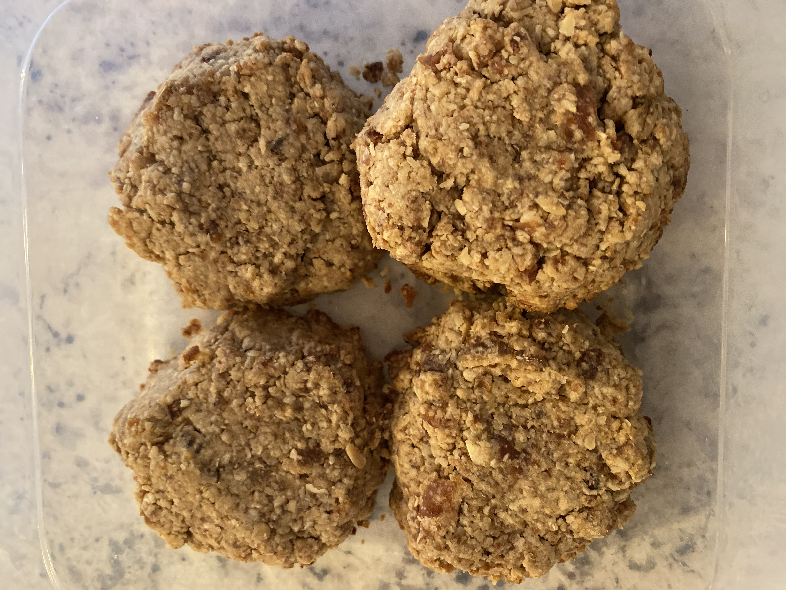

Oatmeal Tahini Date Cookies

Description
3-ingredient cookies that taste good and are good for you! Using just
oats, tahini, and dates, this recipe is perfect for when you want something
sweet and you're not craving chocolate. As a bonus, you can use the same ingredients
in a bowl of oatmeal -- something I do almost every day.
Ingredients
- 1 1/2 cups oats
- 1/2 cups Tahini
- 1 1/2 cups lightly-packed pitted dates
Directions
- Pre-heat oven to 350 degrees.
- Add all ingredients to a food processor or high-speed blender and process until it forms a thick dough.
- Shape into 12 cookies and place on a parchment paper or silicone mat-lined baking sheet.
- Bake for 10 minutes and let cool on the pan before handing.
Bonus -- Oatmeal
Ingredients
- 1/2 cup oats
- 1 cup water
- 1 tbsp Tahini
- 2-3 pitted dates
Directions
- Combine oats and water in a microwave-safe bowl.
- Cook oats and water for 1 minute in microwave.
- Remove from microwave and add chopped dates. Stir to combine.
- Microwave oats, dates, and water for 1 more minute.
- Remove from microwave and add tahini. Stir and enjoy.